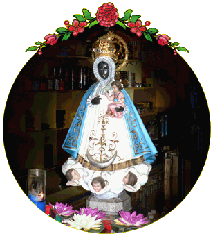
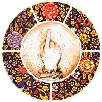
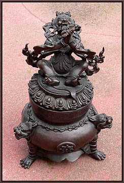
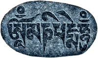

Are You Ready?
...L’art pour l’art... ...Res ipsa loquitur...


|
Welcome Friend to Californios.us, the Home Page of Fred Smoot. Here you will find art, design, and my obsession for history and family history. Be sure visit the website of my wife, Patty Sokolecki Smoot. Patty is a fine arts photographer. She specializes in panoramic photography. We live in SaUSAlito California. Table of Contents :: Fred’s Art and Design: Interior Design Under Construction Tile Design Under Construction Furniture Design Fine Arts Paintings Patty’s & Fred’s Slideshows: :: Slideshows Run Automatically & Contain Many Large Images. Please Allow For Complete Download & Run-Through :: Slideshows Table of Contents  Patty’s Websites: Eagle Eye Photos twoGALSpublishing Patty’s & Fred’s Photos: Carmel California Photos ECV 2006 Photos Nevada Photos Fred’s Photos: Marin County CA, Cemeteries Trip Photos, 2007 Cabinet of Curiosities The Thingamajig Columbarium Photos Fairmont, WA Cemetery Photos Newport, WA Cemetery Photos Wave Organ Photos Desert Photos Sheep Thief Family Pages Family Photos &c. Earth, Art, & Fire Phil Dionne Samarkand Ranch Our Critters Genealogy Baker &c. Kalar &c. Smoot &c. Tennessee Stuff What is a Dogtrot? Log House Deconstruction California History, &c. Californios (Under Construction) Ranch & Mission Days Californian Homes (From the 1920s) Santa Barbara County, Timeline Santa Barbara County, Photos American History, &c. The American Blacksmith Resplandores :: Arts, Crafts, &c. Jo Mora Nicholas de Jesus Mexican Tradition, &c. Día de los Muertos Day of the Dead |

Mahakala
(Ancestral Urn, Nepal)

Om Mani Padme Hum
© 2002-2008 Fred Smoot
All Rights Reserved
This page last updated on
Today is